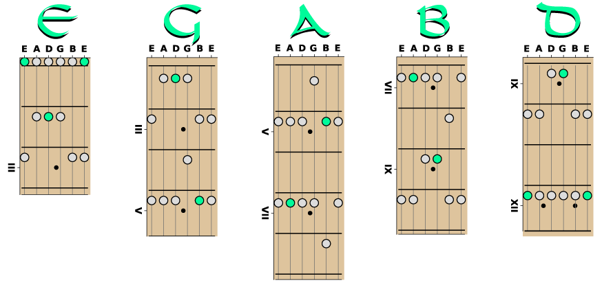

Chord Numerals: i III iv v(V) VII
P1,m3,P4,P5,m7
E minor scale and the five shapes. Relative root notes start each shape on the low E string. They are E,G,A,B,D. Transpose the E minor scale by starting pattern one on the root note on the low E string. For example, for the F minor pentatonic, slide each note one fret up (one half-step).
